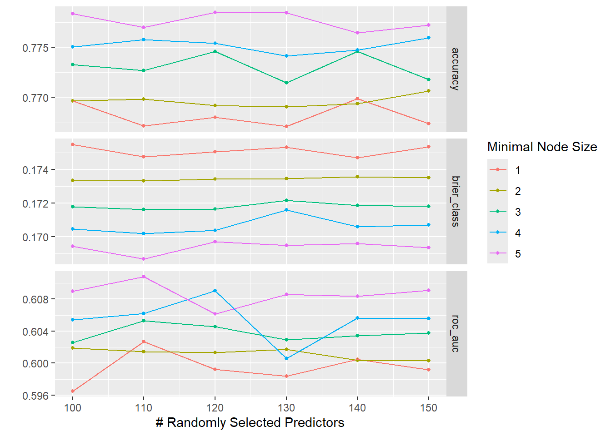
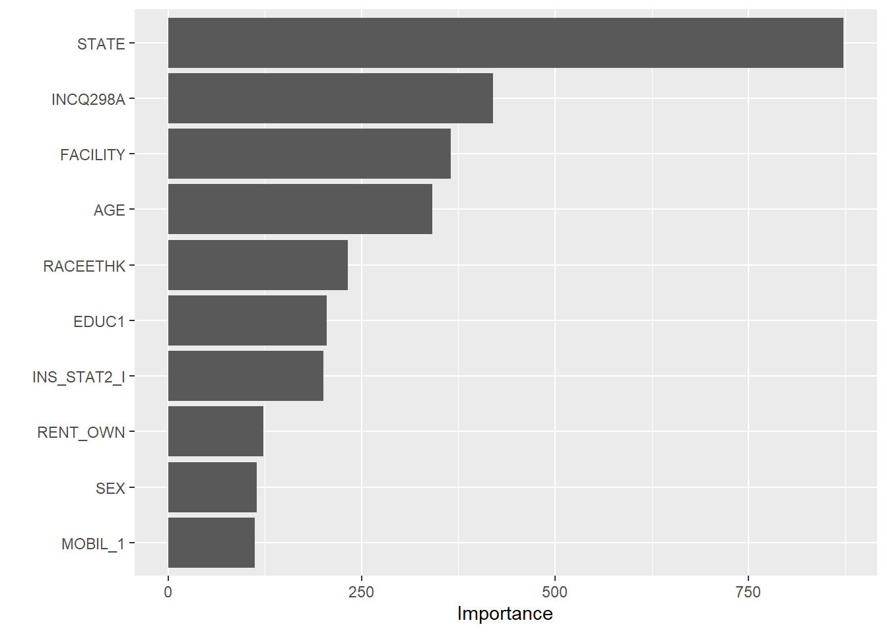

library(tidymodels) # use tidymodels framework.
library(ggplot2) # producing visual displays of data
library(dplyr) # manipulating and cleaning data
library(here) # making relative pathways
library(randomForest) # making random forest model
library(doParallel) # for parallel processing
library(rsample) # for cross validation
library(yardstick) # performance metrics
library(vip) # visualize most important variablesData Analysis and Modeling of Teen Vaccination Surveys
Random Forest Model
# Load and preprocess data
data_location <- here::here("data","processed-data","cleandata1.rds")
mydata <- readRDS(data_location)
# Remove rows with missing values
mydata$SEX <- droplevels(mydata$SEX, exclude = c("DON'T KNOW", "MISSING IN ERROR", "REFUSED"))
mydata$INS_STAT2_I <- droplevels(mydata$INS_STAT2_I, exclude = "MISSING Data")
mydata$STATE <- droplevels(mydata$STATE, exclude = "Missing Data")
mydata$MOBIL_1 <- droplevels(mydata$MOBIL_1, exclude = c("DON'T KNOW", "MISSING IN ERROR", "REFUSED"))
mydata$FACILTY <- droplevels(mydata$FACILITY, exclude = "Missing Data")
mydata$P_UTDHPV <- droplevels(mydata$P_UTDHPV, exclude = "Missing Data")# Split data into training and testing datasets
set.seed(123) # seed for reproducibility
split_data <- initial_split(mydata, prop = 0.8) # 80% split for training/testing data
train_data <- training(split_data)
test_data <- testing(split_data)rf_rec <- recipe(P_UTDHPV ~ AGE + SEX + STATE + INS_STAT2_I + INCQ298A + INS_BREAK_I + INCPOV1 + RACEETHK + EDUC1 + LANGUAGE + MOBIL_1 + RENT_OWN + FACILITY, data = train_data) # use full model as recipe for the random forest model
rf_model <- rand_forest()%>% # use rand_forest() to make a random forest model
set_engine("randomForest", seed = 123)%>%
set_mode("classification")
rf_workflow <- workflow() %>% # create workflow for rf model
add_recipe(rf_rec)%>% # apply recipe
add_model(rf_model) # apply model
rf_fit <- rf_workflow%>%
fit(data = train_data)%>% # use the workflow to fit the rf model to the data
print(rf_fit)══ Workflow [trained] ══════════════════════════════════════════════════════════
Preprocessor: Recipe
Model: rand_forest()
── Preprocessor ────────────────────────────────────────────────────────────────
0 Recipe Steps
── Model ───────────────────────────────────────────────────────────────────────
Call:
randomForest(x = maybe_data_frame(x), y = y, seed = ~123)
Type of random forest: classification
Number of trees: 500
No. of variables tried at each split: 3
OOB estimate of error rate: 21.03%
Confusion matrix:
NOT UTD UTD class.error
NOT UTD 88 2705 0.968492660
UTD 82 10376 0.007840887Now, I will examine the performance of the base random forest model.
# Performance metrics of the first fit
rf_aug <- augment(rf_fit, train_data) # augment to make predictions for rf_fit
metrics <- metric_set(accuracy, f_meas) # create a set of metrics to test for classification
first_fit_metrics <- metrics(truth = P_UTDHPV, estimate = .pred_class, data = rf_aug) # calculate metrics for first fit
print(first_fit_metrics)# A tibble: 2 × 3
.metric .estimator .estimate
<chr> <chr> <dbl>
1 accuracy binary 0.927
2 f_meas binary 0.791The accuracy of the model is fairly high, meaning that there it performs fairly when classifying the predictors in the model. However, the F1 score is relatively low which reflects low precision and recall of the model. To improve this we will tune the model.
Now, I will continue by tuning the RF model using cross validation. I start with a smaller numer of trees and lower number of folds because my computer cannot computationally handle many trees or folds.
tune_spec <-
rand_forest(
mtry = tune(), # parameters of random forest model to tune are the mtry, trees, and min_n
trees = 100,
min_n = tune()) %>%
set_engine("randomForest", seed = 123) %>% # make sure to set seed again for the tree
set_mode("classification")
## I used ChatGPT to help me define the tree grid for the parameters mtry and min_n
tree_grid <- grid_regular(mtry(range = c(1, 13)),
min_n(range = c(1, 500)),
levels = 6)
rf_tune_wf <- workflow() %>% # create workflow
add_recipe(rf_rec) %>% # add recipe from earlier
add_model(tune_spec) # add spec that is defined above
folds_data <- vfold_cv(train_data, v=5 )
# Set the number of cores to use
num_cores <- detectCores() - 1
# Initialize parallel backend
doParallel::registerDoParallel(cores = num_cores)
set.seed(123) # set seed for reproducibility
rf_res <- rf_tune_wf %>%
tune_grid(
resamples = folds_data, # use data from the CV folds
grid = tree_grid)
rf_res %>%
autoplot()# Stop parallel processing
stopImplicitCluster()rf_res %>%
collect_metrics() %>% # get metrics from the rf model created
filter(.metric == "roc_auc") %>% # filter for the roc auc metric
select(mean, min_n, mtry) %>% # select the columsn for mean, min_n and mtry
pivot_longer(min_n:mtry,
values_to = "value",
names_to = "parameter"
) %>%
# Plot the ROC_AUC to find the ideal min_n and mtry
ggplot(aes(value, mean, color = parameter)) +
geom_point(show.legend = FALSE) +
facet_wrap(~parameter, scales = "free_x") +
labs(x = NULL, y = "AUC")It seems that mtry is maximized between 100 and 150 and min_n is maximized between 1 and 5. We can use a grid search to tune within a range to determine which is the ideal parameter value.
# grid search tuning
rf_tune_grid <- grid_regular( #define a grid with a range for mtry and min_n
mtry(range = c(100, 150)),
min_n(range = c(1, 5)),
levels = 6
)
rf_tune_grid # display the grid# A tibble: 30 × 2
mtry min_n
<int> <int>
1 100 1
2 110 1
3 120 1
4 130 1
5 140 1
6 150 1
7 100 2
8 110 2
9 120 2
10 130 2
# ℹ 20 more rows# Tune using the defined tuning grid
doParallel::registerDoParallel(cores = num_cores)
set.seed(123) # set seed for reproducibility
rf_res2 <- rf_tune_wf %>%
tune_grid(
resamples = folds_data, # use data from the CV folds
grid = rf_tune_grid) # use new tune grid
rf_res2 %>%
autoplot()
# Stop parallel processing
stopImplicitCluster()From the plot, it seems that the ideal minimum node size (min_n) is 5 when the number of randomly selected predictors (mtry) is 140, when accuracy and ROC_AUC are both accounted for. We can check this using the select_best function.
# Specify the metric and optimization criteria
best_auc <- select_best(rf_res2, metric = "roc_auc")
final_rf <- finalize_model( # select the best model based on roc_auc
tune_spec,
best_auc
)
# fit the tuned model
set.seed(123)
rf_rec <- recipe(P_UTDHPV ~ AGE + SEX + STATE + INS_STAT2_I + INCQ298A + INS_BREAK_I + INCPOV1 + RACEETHK + EDUC1 + LANGUAGE + MOBIL_1 + RENT_OWN + FACILITY, data = train_data) # use full model as recipe for the random forest model
rf_workflow <- workflow() %>% # create workflow for rf model
add_recipe(rf_rec)%>% # apply recipe
add_model(final_rf) # apply model
rf_tune_fit <- rf_workflow%>%
fit(data = train_data)%>% # use the workflow to fit the rf model to the data
print(rf_tune_fit)══ Workflow [trained] ══════════════════════════════════════════════════════════
Preprocessor: Recipe
Model: rand_forest()
── Preprocessor ────────────────────────────────────────────────────────────────
0 Recipe Steps
── Model ───────────────────────────────────────────────────────────────────────
Call:
randomForest(x = maybe_data_frame(x), y = y, ntree = ~100, mtry = min_cols(~110L, x), nodesize = min_rows(~5L, x), seed = ~123)
Type of random forest: classification
Number of trees: 100
No. of variables tried at each split: 13
OOB estimate of error rate: 22.65%
Confusion matrix:
NOT UTD UTD class.error
NOT UTD 292 2501 0.89545292
UTD 501 9957 0.04790591The final random forest model was selected to optimize roc_auc, but it also has a fairly high accuracy. We can use
# make predictions
rf_tuned_aug <- augment(rf_tune_fit, train_data)
# find metrics for tuned fit
tuned_fit_metrics <- metrics(truth = P_UTDHPV, estimate = .pred_class, data = rf_tuned_aug) # calculate metrics for first fit
print(tuned_fit_metrics)# A tibble: 2 × 3
.metric .estimator .estimate
<chr> <chr> <dbl>
1 accuracy binary 0.945
2 f_meas binary 0.853The F1 measure has improved significantly, to 0.86 and the accuracy increased slightly, to 0.95.
Now I will compare the model will the a single predictor model and the original fit to verify that there is improvement in the predictions made.
# RF model compared to single predictor model
## Create a single model
rf_rec_null <- recipe(P_UTDHPV ~ SEX, data = train_data) # specify the model with a recipe; I could not get a null model to work so I used one predictor as a minimal model for comparison
rf_spec_null <- rand_forest() %>%
set_engine("randomForest", importance = TRUE, seed = 123) %>% # set the seed and specify that importance is true
set_mode("classification")
rf_workflow_null <- workflow() %>% # create workflow with the recipe and spec
add_recipe(rf_rec_null) %>%
add_model(rf_spec_null)
rf_fit_null <- rf_workflow_null %>% # fit the null model
fit(data = train_data)
# Get predictions from single predictor model
rf_null_aug <- augment(rf_fit_null, train_data)Model metrics could not be computed because there were missing classifications in the single predictor model. Because of this, I will compare the single predictor and full model using confusion matrices.
# confusion matrix for tuned model
conf_mat(
data = rf_tuned_aug,
truth = P_UTDHPV,
estimate = .pred_class,
dnn = c("Prediction", "Truth"),
case_weights = NULL) Truth
Prediction NOT UTD UTD
NOT UTD 2113 51
UTD 680 10407#Confusion matrix for null model
conf_mat(
data = rf_null_aug,
truth = P_UTDHPV,
estimate = .pred_class,
dnn = c("Prediction", "Truth"),
case_weights = NULL) Truth
Prediction NOT UTD UTD
NOT UTD 0 0
UTD 2793 10458The confusion matrix for the tuned model (top) demonstrates that there are more false positives than false negatives. After calculating sensitivity (76.6%) and specificity(99.4%), a clear trade off between the two metrics is observed. The confusion matrix for the single predictor model (bottom) indicates that the model cannot predict an outcome of not up to date on HPV vaccination, where the NOT UTD prediction row is zero. Finally, I will test the tuned model using the test data from the split. To make pre
# Making predictions using test data
test_rf_aug <- augment(rf_tune_fit, test_data)
# find metrics for tuned fit
test_tuned_metrics <- metrics(truth = P_UTDHPV, estimate = .pred_class, data = test_rf_aug) # calculate metrics for first fit
print(test_tuned_metrics)# A tibble: 2 × 3
.metric .estimator .estimate
<chr> <chr> <dbl>
1 accuracy binary 0.779
2 f_meas binary 0.139The tibble reveals that the accuracy and F1 measure are greatly reduced when fitting the tuned model to the test data compared to the train data. This may indicate overfitting to the train data. Although the model is overfit, I will attempt to visualize the predictors chosen by the tuned model.
# Finding importance of variables chosen
rf_vars <- rf_tune_fit %>%
extract_fit_parsnip() %>% # use parsnip to extract to fit
vip::vip() #use vip for visualizing the most important variables
print(rf_vars)
The most important variable, according to this model, is state, followed by income poverty ratio, then facility, then facility. Despite the importance above, it should be noted that the multicollinearity may affect the importance of the variables selected. This means that a model that regularizes the parameters could be ideal for finding the most important predictors. For this, we will try using the LASSO model.